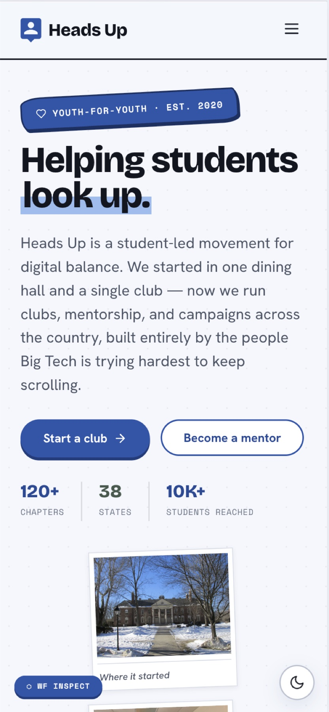
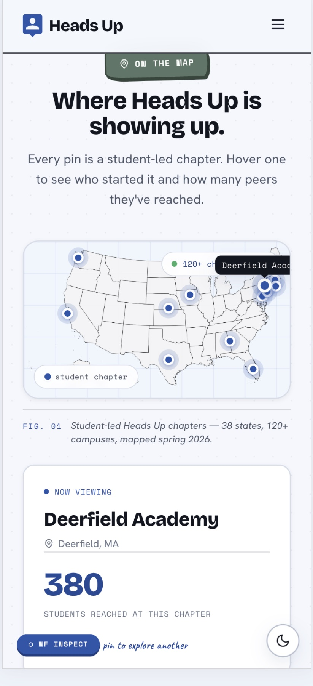
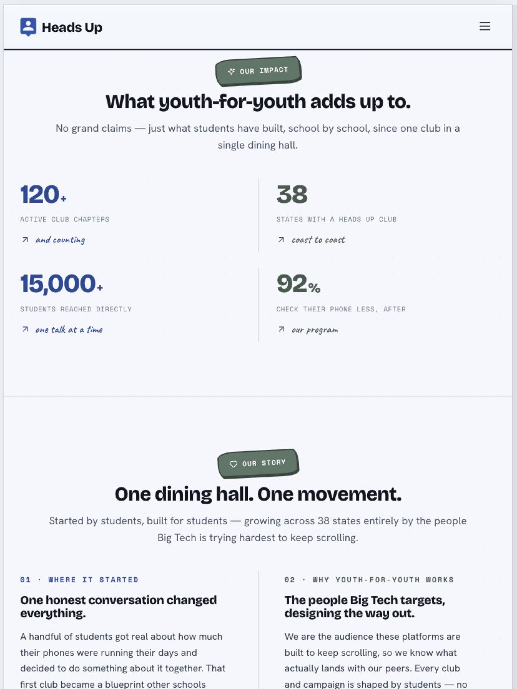
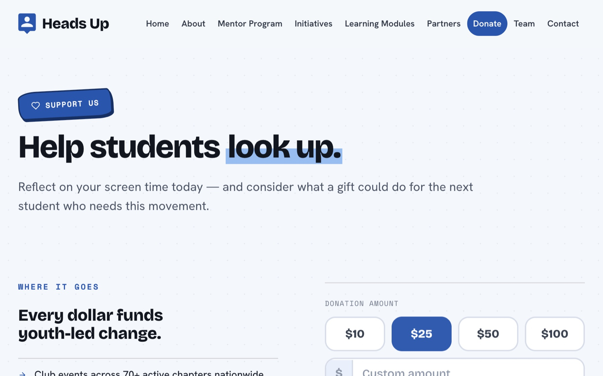
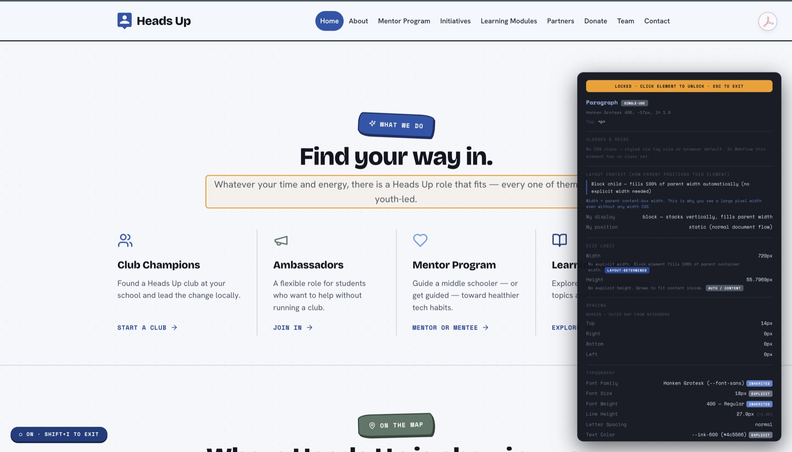
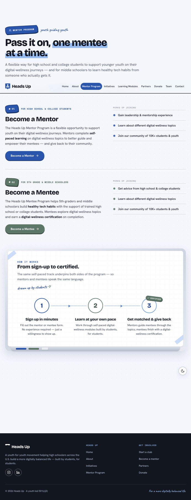
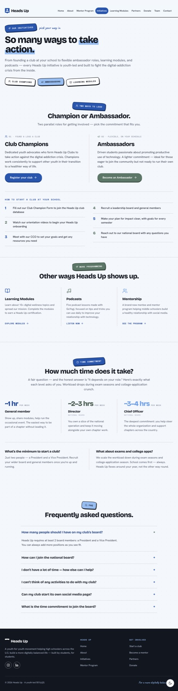
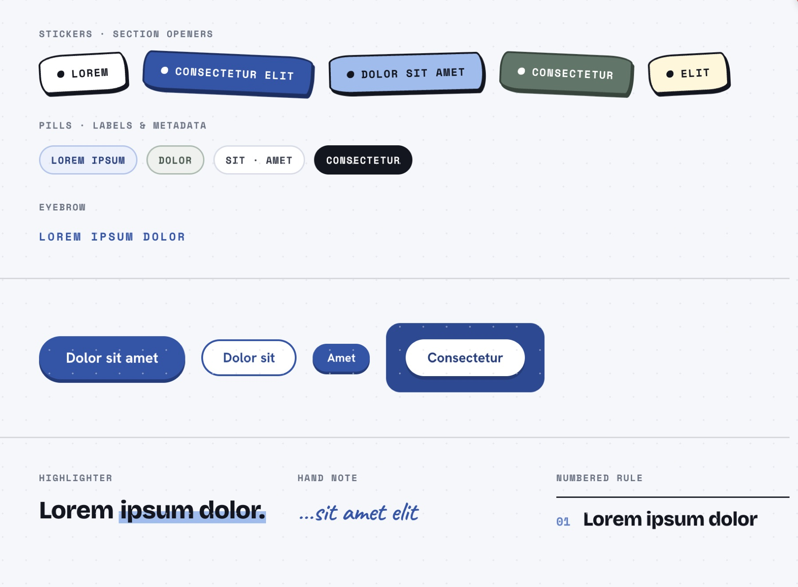

Phone view


Tablet view

Laptop view

Helper tool
A small tool I built for the Webflow rebuild. Click any element on the old site to read its class, spacing, and type, so each piece can be rebuilt to match.

Design guide
One system across every page: stickers that open sections, pills for labels, a highlighter for key words, handwritten notes, and numbered rules.


